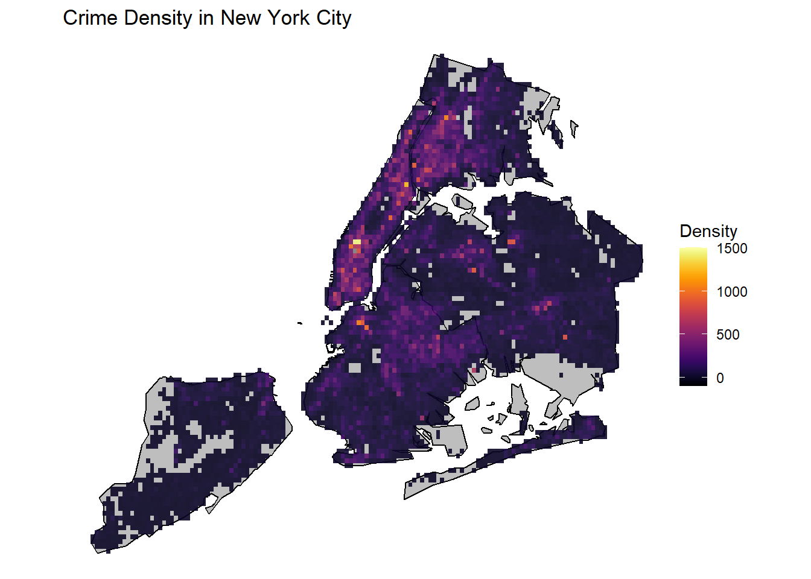
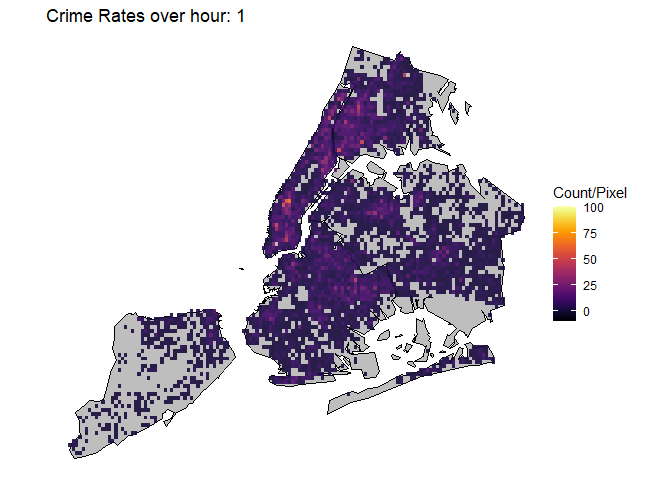

ggplot() +geom_polygon(data=nyc_map, aes(x = long, y = lat, group = group),fill ="grey", color ="black") +geom_bin2d(data=df_geo, aes(x = Longitude, y = Latitude), binwidth =c(0.004, 0.004), alpha=0.9) +scale_fill_gradientn(colors =inferno(100), name ="Density",limits =c(-100, 1500)) +coord_fixed(ratio =1.2) +labs(title ="Crime Density in New York City") +theme_void()

The crime density has been plotted over NYC as shown above. The binsize has been set to roughly cover 5 streets and 1 avenue. From here we can immediately see that most crimes are focused in Midtown Manhattan area just below Central Park. Not only that, Downtown Brooklyn, Downtown Flushing and the Bronx also show high crime activity. These are areas of high population density and it makes sense to have higher criminal activity in densely populated areas. As opposed to this, Staten Island has low crime rates, attributable to low population density.
Code
p <-ggplot() +geom_polygon(data=nyc_map, aes(x = long, y = lat, group = group),fill ="grey", color ="black") +geom_bin2d(data=df_geo, aes(x = Longitude, y = Latitude), binwidth =c(0.004, 0.004), alpha=0.9) +scale_fill_gradientn(colors =inferno(100), name ="Count/Pixel",limits =c(-10, 100)) +coord_fixed(ratio =1.2) +labs(title ="Crime Rates over time") +theme_void() +labs(title ="Hour: {frame}")# Here comes the gganimate specific bitsanimated_plot <- p +transition_manual(Hour) +enter_fade() +exit_fade()animate(animated_plot)
nframes and fps adjusted to match transition

This animation plot shows the evolution of crime rates throughout the day from 00 hour to 24 hour. As we can see, with agreement to the timeseries plot above, crime rates are highest during Noon~14 hour time, with hotspots apprearing in Midtown Manhattan, Harlem, Bronx, Downtown Brooklyn and Downton Flushing.
Code
filter <- df_geo$OFNS_DESC =='PETIT LARCENY'p <-ggplot() +geom_polygon(data=nyc_map, aes(x = long, y = lat, group = group),fill ="grey", color ="black") +geom_bin2d(data=df_geo[filter, ], aes(x = Longitude, y = Latitude), binwidth =c(0.004, 0.004), alpha=0.9) +scale_fill_gradientn(colors =inferno(100), name ="Petit Larceny/Pixel",limits =c(-5, 40)) +coord_fixed(ratio =1.2) +labs(title ="Petit Larceny over time") +theme_void() +labs(title ="Hour: {frame}")# Here comes the gganimate specific bitsanimated_plot <- p +transition_manual(Hour) +enter_fade() +exit_fade()animate(animated_plot)
This animation plot has been filtered by type of offense. In this case, this plot only shows petit larceny, the most common offense in NYC. Here we can see a similar pattern as previous animation plots, where hotspots appear in Midtown Manhattan. However, now we can see more granular hotspots of petit larceny. Note the hotspot in the western boundary between Bronx and Manhattan, in Central Bronx, in Queens. These hotspots correspond to where Target stores are at. In fact, Target has announced to pull out from various locations in NYC due to shoplifting causing major losses. Also note the hour at which these hotspots get saturated, it is around 15 hour, which is the hour with the most customers in Target. It seems the more people involved, the more likely petit larceny occurs. Lower Manhattan also shows huge amounts of petit larceny during this same hour.
Code
filter <- df_geo$OFNS_DESC =='HARRASSMENT 2'p <-ggplot() +geom_polygon(data=nyc_map, aes(x = long, y = lat, group = group),fill ="grey", color ="black") +geom_bin2d(data=df_geo[filter, ], aes(x = Longitude, y = Latitude), binwidth =c(0.004, 0.004), alpha=0.9) +scale_fill_gradientn(colors =inferno(100), name ="Harrassment/Pixel",limits =c(-1, 10)) +coord_fixed(ratio =1.2) +labs(title ="Harassment over time") +theme_void() +labs(title ="Hour: {frame}")# Here comes the gganimate specific bitsanimated_plot <- p +transition_manual(Hour) +enter_fade() +exit_fade()animate(animated_plot)
This plot shows Harassment instances, the second most common offense in NYC. We see this offense having hotspots in the Bronx, Brookyn and Harlem and not so much in Midtown and Downtown Manhattan. It also shows a consistent peak from 10 hour to 20 hour, which are times when people are generally active. Unlike petit larceny, the hotspots are not as focused but more spread out.
Code
filter <- df_geo$OFNS_DESC =='ASSAULT 3 & RELATED OFFENSES'p <-ggplot() +geom_polygon(data=nyc_map, aes(x = long, y = lat, group = group),fill ="grey", color ="black") +geom_bin2d(data=df_geo[filter, ], aes(x = Longitude, y = Latitude), binwidth =c(0.004, 0.004), alpha=0.9) +scale_fill_gradientn(colors =inferno(100), name ="Misdemeanor Assault/Pixel",limits =c(-1, 10)) +coord_fixed(ratio =1.2) +labs(title ="Misdemeanor Assault over time") +theme_void() +labs(title ="Hour: {frame}")# Here comes the gganimate specific bitsanimated_plot <- p +transition_manual(Hour) +enter_fade() +exit_fade()animate(animated_plot)
This plot shows Misdemeanor Assaults, the 3rd most common type. This crime shows similar patterns to harrasment. This makes sense considering the similarity of Assault and Harrasment.
Code
filter <- df_geo$OFNS_DESC =='GRAND LARCENY'p <-ggplot() +geom_polygon(data=nyc_map, aes(x = long, y = lat, group = group),fill ="grey", color ="black") +geom_bin2d(data=df_geo[filter, ], aes(x = Longitude, y = Latitude), binwidth =c(0.004, 0.004), alpha=0.9) +scale_fill_gradientn(colors =inferno(100), name ="Grand Larceny/Pixel",limits =c(-1, 10)) +coord_fixed(ratio =1.2) +labs(title ="Grand Larceny over time") +theme_void() +labs(title ="Hour: {frame}")# Here comes the gganimate specific bitsanimated_plot <- p +transition_manual(Hour) +enter_fade() +exit_fade()animate(animated_plot)
This plot shows Grand Larceny, the 4th most common type. Here we can see that Midtwon and Downtown Manhattan are hotspots for this type of crime. Considering the affluence of those regions this makes sense. It also seems to be more active during 10 hour to 20 hour, when people are generally active.
Code
filter <- df_geo$OFNS_DESC =='FELONY ASSAULT'p <-ggplot() +geom_polygon(data=nyc_map, aes(x = long, y = lat, group = group),fill ="grey", color ="black") +geom_bin2d(data=df_geo[filter, ], aes(x = Longitude, y = Latitude), binwidth =c(0.004, 0.004), alpha=0.9) +scale_fill_gradientn(colors =inferno(100), name ="Felony Assault/Pixel",limits =c(-1, 10)) +coord_fixed(ratio =1.2) +labs(title ="Assault Felonies over time") +theme_void() +labs(title ="Hour: {frame}")# Here comes the gganimate specific bitsanimated_plot <- p +transition_manual(Hour) +enter_fade() +exit_fade()animate(animated_plot)
This plot shows Assault Felonies, the 5th most common type. Here we can see a similar pattern to Harrassment, where hotspots are located in The Bronx, Harlem, Downtown Brooklyn areas.